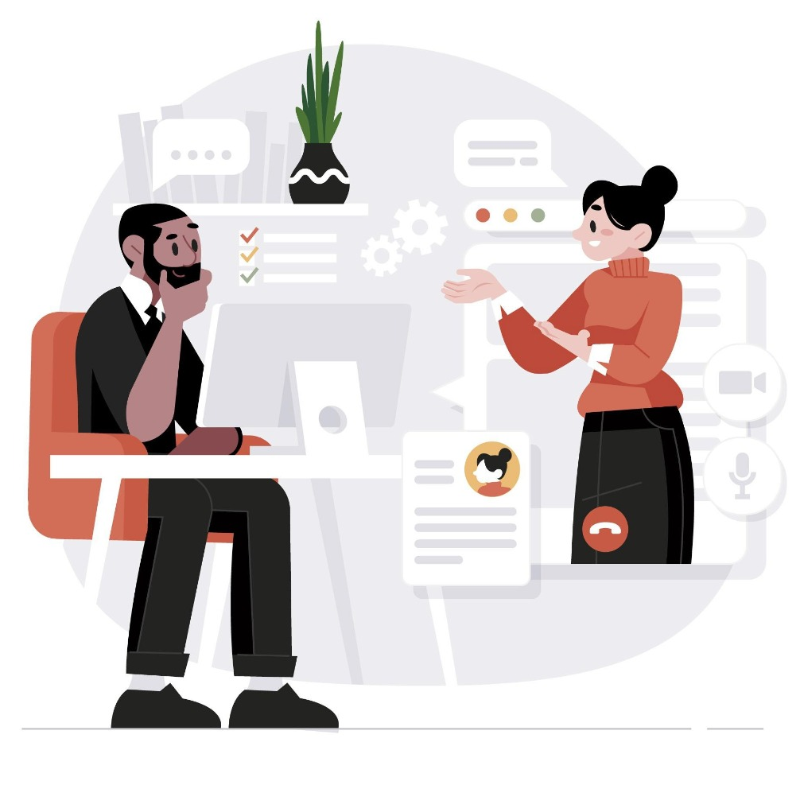
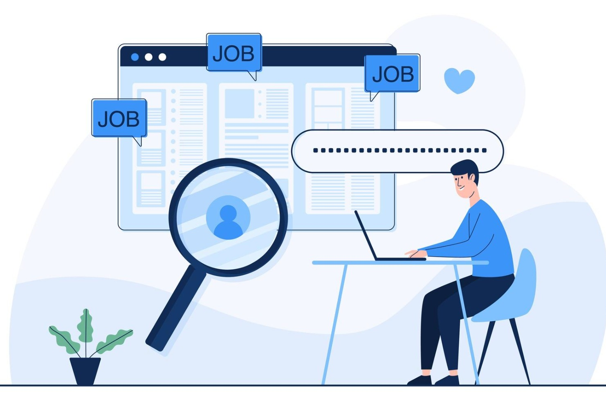

PrepSphere
Stop scrolling, start signing. PrepSphere is the ultimate end-to-end guide for crushing the interview game. We've decoded the hiring process into three tactical phases, answering every What, Where, and Why so you never have to "wing it" again.
Get Your Act Together
Build a brand that stands out before you enter the arena.Before you enter the arena, you need a brand that hits. We establish your fundamentals so you aren't just another applicant—you're the only choice.
Custom-built trajectories for both Tech and Non-Tech roles. We show you exactly what skills to stack.
The ultimate "How-To" on resume architecture. We explain what a resume actually is in 2026, how to build one from scratch, and provide a Buzzword Generator to bypass ATS filters. Edit, save, and download pro-tier templates instantly.
Master the art of the first impression. Learn the strategy behind the letter, use our JD-specific keywords, and grab templates that actually get read.

Main Character Energy
The preparation phase where real work happens.Our Intervyu module is a triple-threat ecosystem designed to make you the most prepared person in the room.
Stop guessing. Get the deep dive on company-specific preparation patterns and the "hidden" requirements recruiters look for.
Your survival guide for the "gauntlet." We provide elite guidelines, tips, and practice resources for GD, JAM, Aptitude, MCQs, and Technical/HR Rounds.
Drop any Job Description (JD) into the engine. It instantly generates a custom study list and a bank of high-probability questions so you can test yourself before the real deal.
Secure the Bag
Your master library for the entire application lifecycle.Applying is a skill, not a chore. HireHub covers before, during, and after the interview.
A curated list of the best platforms and secret spots to find your next role. We tell you where to look so you don't waste time on dead boards.
Everything you need to know about how the hiring world works today. No more "black hole" applications.
Don't wait for them to find you. We provide the complete "What, Where, and Why" for Cold Mailing, Direct Messaging, and Post-Rejection Strategies.
